Bueno, ya es hora de conocer las Texturas Musicales y vamos a empezar aprendiendo a definirlas y a cómo reconocerlas:
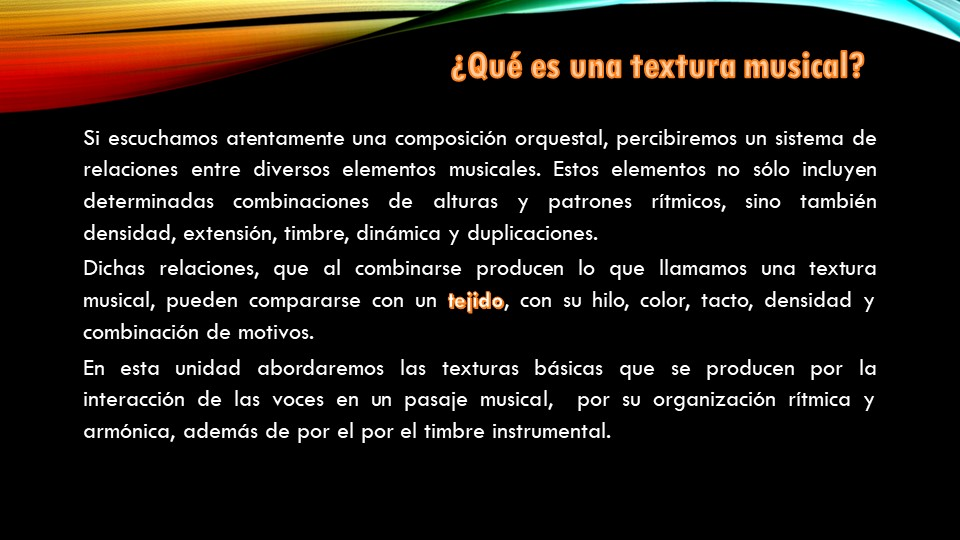
Bueno, ya es hora de conocer las Texturas Musicales y vamos a empezar aprendiendo a definirlas y a cómo reconocerlas:
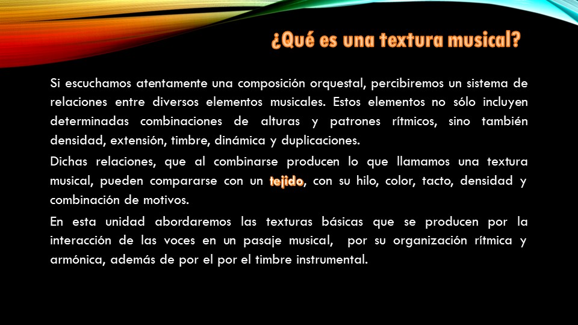
L
| TEXTURAS | DEFINICIÓN |
| MONODIA | Consiste en una sola melodía interpretada por uno o varios intérpretes. |
|
HOMOFONÍA |
Son varias líneas melódicas interpretadas con el mismo ritmo. |
| CONTRAPUNTO | Son varias melodías que tienen la misma importancia y que tienen diferente ritmo a la vez. Suelen ser melodías que se imitan. |
|
MELODÍA ACOMPAÑADA |
Consiste en una melodía principal que destaca sobre un acompañamiento uniforme. |
Estas definiciones son muy básicas para una pronta identificación, pero ahora profundizaremos un poco más en cada una de ellas para conocer mejor sus características:
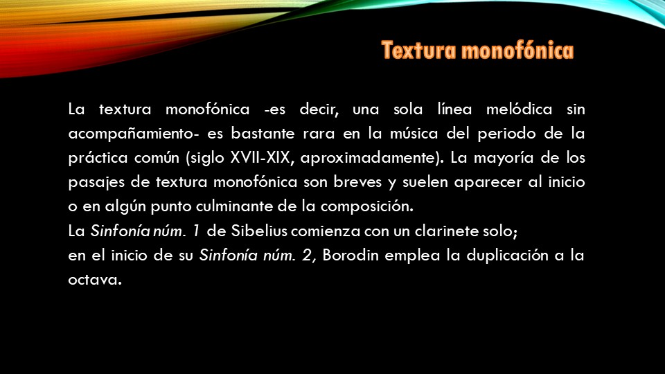 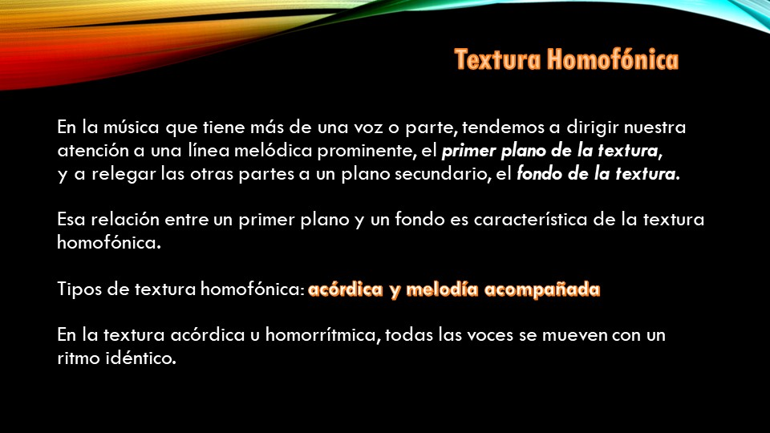
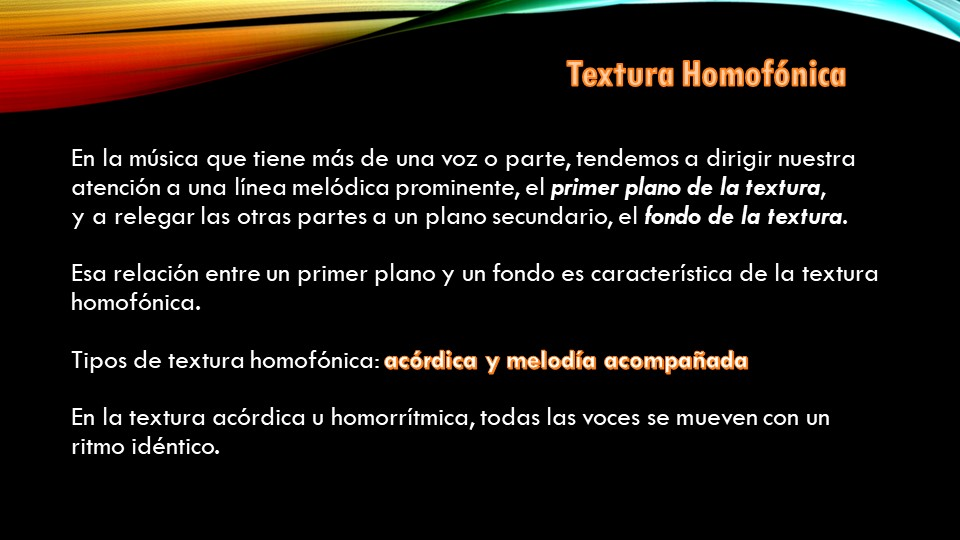 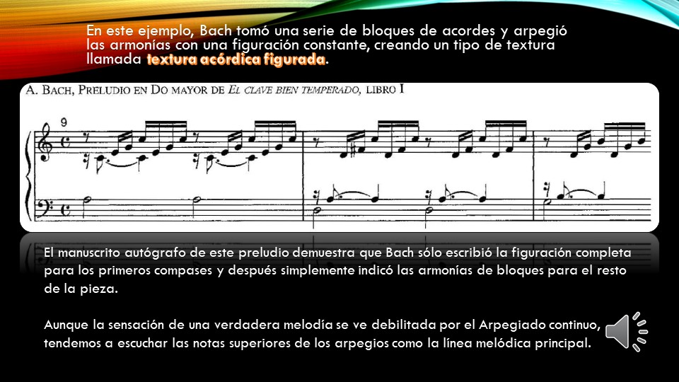
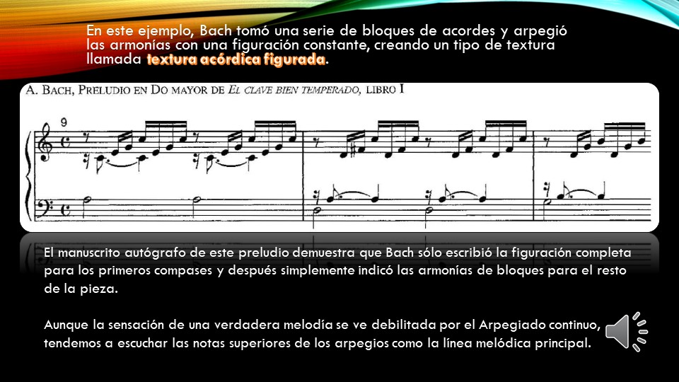
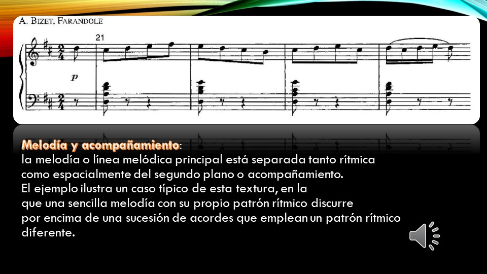
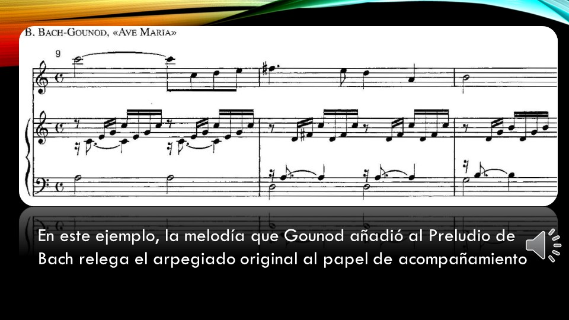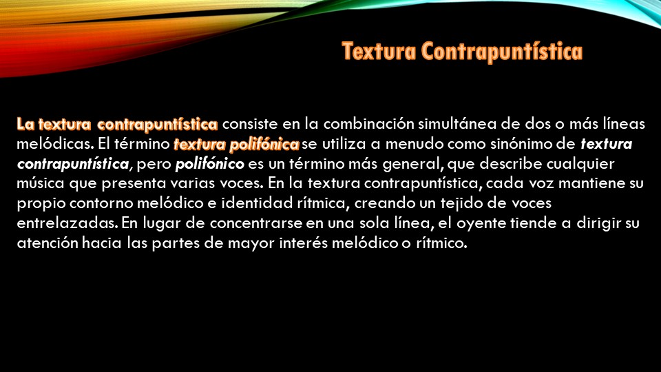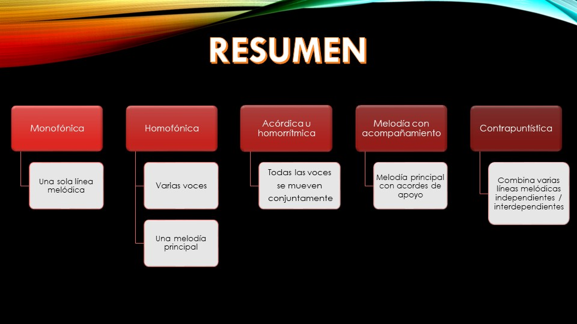
Una vez finalizado toda la parte teórica del contenido de La Textura vamos a comprobar si hemos entendido las diferencias que existen entre cada una de ellas realizando la siguiente actividad, donde habrá que buscar la partitura y los audios de las piezas propuestas e identificar su textura. ¡Vamos a por ello!
Obra publicada con Licencia Creative Commons Reconocimiento Compartir igual 4.0